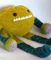
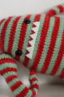

|
||
Premium Patterns Wintry Mix Mitts Love Bytes HawkeyeFree Patterns Kiddie Cadet Summerlin Ruffled Scarf Seamless DS Sock Simply Seamless Pouch Myriads of MushroomsExtras DIY Mitten Blocker Felt Patch Tutorial Yarn Dyeing Tutorial Needle Pouches Knitting Journal |
October 03, 2011 - Posted by Alice SchneblyWispyProject Specs This summer we were lucky enough to get to spend a nice long vacation at Grace's place and for my birthday she let me pick out some yarn from Mr. Yarn. I chose some Dream in Color Starry. I've never worked with it before but have been wanting to try it for some time. I opted for a rich olive green, which I thought was a good contrast to all the silver sparkles. Knitting with Starry is nice--just like knitting with DIC's Smooshy which I've used before. It's very crisp in the hand and produces a nice fabric (even on US7s). If you're intimidated by all the glitz in a skein of Starry, it actually becomes more subtle once it's knit up, with an even spattering of sparkles that seem to catch the light just right.
I like the finished style of this cardigan, though I'm not sure the fit is 100% right. I knit the smallest size in the pattern (Child's 4/6) for Camdyn and I'm lucky she was around so that I could try it on her along the way. I'm glad I didn't just go by her normal size (she generally wears a girls 6 or 6x) and follow the numbers blindly because the back of the sweater would have been way too wide. As it is, even after cutting over 3" from the back width the fit is still a little awkward and there is excess fabric across the back and at the underarms. I think in general it looks good enough, and I wasn't about to rip out my work to try to make it better, so this is as good as it gets. I can't really speak to how the larger sizes in the pattern measure up, but for children it seems like it would be hard to knit if the intended recipient wasn't on hand for frequent fittings--and even then in my case I couldn't get the fit quite right. I made a few other minor changes along the way. I had to go up a needle size to get gauge, and I also opted to knit the sleeve ribbing on the smaller needles to bring them in a bit more. As quite a few others have done with this pattern, I knit the sleeves in the round to avoid seaming and omitted the gathered section at the middle back. I also added about 4" to the length of the skirt portion for a longer cardigan.  March 31, 2011 - Posted by Alice SchneblyTony the Toy Box Monster There once was a monster named Tony Project Specs Camdyn actually picked this pattern out from the book for me to make as my second monster. I'm not sure what jumped out at her (maybe it was that he has "toy" in his name?) so even though this wasn't originally one of the patterns I planned on knitting this month, I decided to take her advice and cast on for Tony. I'm glad I did because he turned out super cuddly, and even before he was finished Camdyn was sneaking off with his body and snuggling it as she fell asleep at night. I chose to work with Malabrigo Chunky--mainly because I already had a few wound balls around. This seems to be my m.o. lately. I grab the nearest yarn cake, passing up the gorgeous skeins of yarn right next to them because I am too lazy to get out my swift and ball winder. I also didn't weigh these cakes before casting on, so I can't tell you exactly how much yarn I used. I really need to break this lazy knitter habit! I knit Tony's body first from my biggest cake of Frank Ochre. When I finished, I realized I wouldn't be able to complete any of his other parts from the same color. Though I have always been a huge fan of DPNs, I decided to give the Magic Loop technique a try so I could better match Tony's limbs by knitting them two at a time. Last month I ordered the complete set of the Knit Picks Interchangeable Needles, so I decided to put them to good use and knit Tony's legs first. This is my first time using this technique, but I can't believe it took me so long to try it. Knitting the legs in a pair was great! I loved how when they were done, that was it! I am loving making monsters, and I actually have 4 more almost finished monsters waiting in the wings. Today is the last day of Malabrigo March, so I'll be pushing to finish them all up! Stay tuned for a deluge of monsters next week...  March 23, 2011 - Posted by Grace SchneblyProud to be Neighborly Project Specs This adorable top has been in my Ravelry favorites for ages. My niece's birthday is coming up (it seems like a birthday is always coming up nowadays!), and was really excited for the opportunity to finally knit this top. I don't know why I feel like I need to wait for birthdays or special occasions to knit some things. I definitely need to get out of that mindset and just make whatever I want, whenever I want, for whomever I want! This is especially the case with children's clothes since they grow so quickly! Seriously there are just too many knits and not enough time (especially for a lazy knitter like myself).
Button hole row 1: k3, bo4, k3 When picking up stitches for the body I went kind of willy nilly and didn't count until I had picked up around the entire collar. I ended up with 2 extra stitches on my needles, so to get back to the proper number I just k2tog one over each shoulder on the next round. This pattern is very forgiving, so don't be too concerned if you pick up a few extra stitches or knit the collar a few rows too long. I had originally planned on using Damask for the entire top, but once I got to the lower bodice it just seemed like too much pink. I ended up working graded stripes in natural which turned out pretty cute and makes it feel really girly. I started with 2 rows of Natural, then 2 rows of Damask, then 3 rows of Natural, then 2 rows of Damask, continuing in that manner until ended with 7 rows of Natural for the final stripe. After the turning row I knit an additional 7 rows in Natural to make sure the entire bottom stripe would be part of the turned hem. The knitting goes quite fast since there is very little shaping or seaming. I also opted to leave out the ribbing around the arm holes so that saved some time in the end as well. This pattern is free, but I really like Jennifer's concept behind the design about being neighborly. She urges anyone who knits this pattern to make a donation to a charity of their choice or make two and donate one. The thought behind this pattern makes you feel great about knitting. I made a donation Unicef to help support the needs of children affected by the earthquake and tsunami in Japan (100% of the donations go to Japan). If you would like to donate, check out the Google Crisis Response page for the 2011 Japan earthquake and Tsunami. They have links to several charities, including the Japanese Red Cross, so donating is easy. March 16, 2011 - Posted by Alice SchneblyMeet Gort.Meet Gort Project Specs I picked up this book on Amazon a few weeks ago, and it was the perfect cure for my knitting funk. As of late I hadn't been drawn enough to a pattern really make time to sit down and knit, but this cute collection of monsters (combined with Malabrigo March) was all I needed to get back into my groove. Though Grace has knit a few of Rebecca's other monster patterns, this guy is my first. I love how even though the designs are so simple they have so much personality! Gort jumped out at me as a good first monster--it's one of the easier patterns, and I could choose from my stash of partial balls of Malabrigo so it would be a perfect stash buster. The knitting went by quickly, and the only thing I really had to think about was the striping. I didn't do any special striping techniques, so there's a slight jog at color changes. I admit it does bother me some but my laziness definitely got the best of me this time. I've already started a couple other monsters from the book--what can I say, they're super addictive! I hope to share those with you later this week! If you're interested in knitting up some monsters (or any other stuffed toy pattern), it's not too late to come join us in the Monster & Stuffed Toy Malabrigo March Knit-a-long. Lots of cute monsters have already been knit so be sure to stop by and check them out for inspiration! I also wanted to mention that Grace is hosting a giveaway in her Mr. Yarn Ravelry Group. All you have to do is post a photo of your finished Malabrigo March project in this thread, and she'll draw from all the entries and give away a few skeins of free Malabrigo Yarn and $20 Mr. Yarn gift cards! All projects are welcome whether or not you bought the yarn at Mr. Yarn!  January 31, 2011 - Posted by Alice SchneblyFelted MatrioshkasProject Specs Like Grace I am always searching for projects to use up my stash of worsted weight wool. When I started knitting I stocked up on Patons and Cascade 220 like there was no tomorrow (plus I used them to knit just about everything) so I've amassed quite a stash of them. Now I've discovered many other yarns that I love, but I still turn to basic worsted wools for felting projects. These dolls are super simple to make and the knitting portion of the pattern can be easily finished in one day. The finishing does take quite a bit longer, and some patience. Katie's pattern gives good instructions on how to felt the doll pieces by hand and shape them after they are fulled. Although I love the look of the embroidered flower patches, my attempts looked pretty sad. This was not at all the pattern's fault. There were templates for each size and the directions were great, but I just couldn't stick it out. Instead I opted to add little bow ties from wool felt. I actually love them and the extra splash of color they add. These little dolls are going to be a present for my niece Serena for her first birthday which is quickly approaching. I can't believe it's already been a year since she surprised us all by arriving over a month early. She's grown into such a wonderful healthy little girl. I hope she loves stacking and playing with these cute dolls! |
   Recent ReviewsRecent Posts
 Our Favorites
|
| © 2007 KathrynIvy.com | ||


{kind=link}
{kind=link}
{kind=link}
{kind=link}
{kind=link}